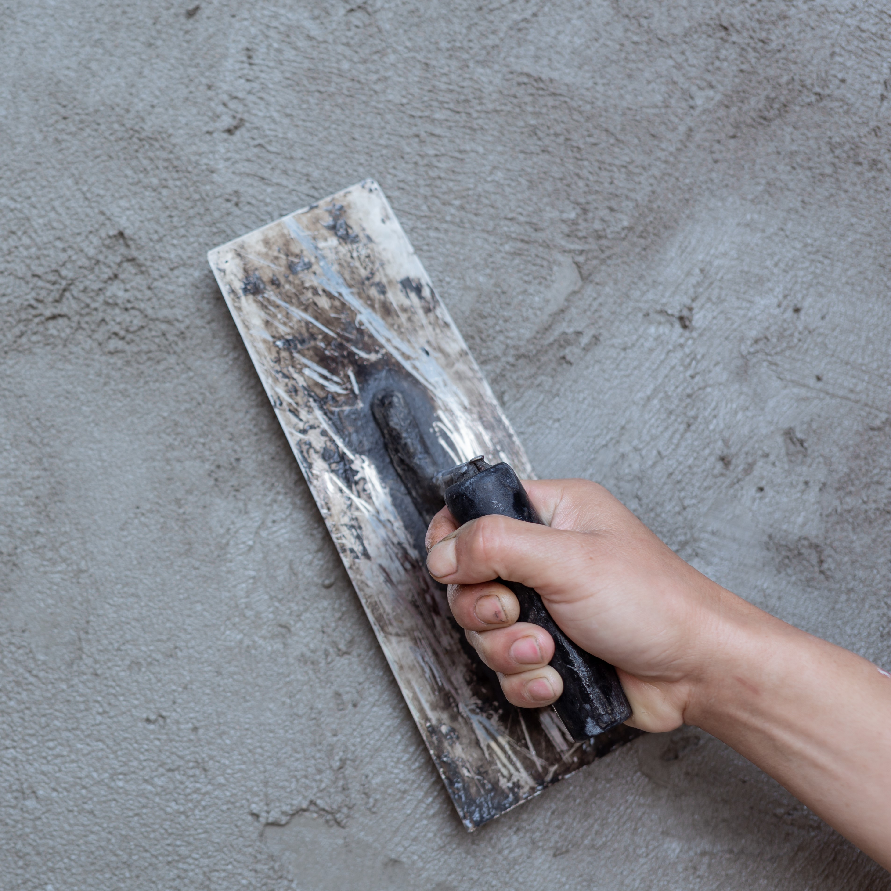
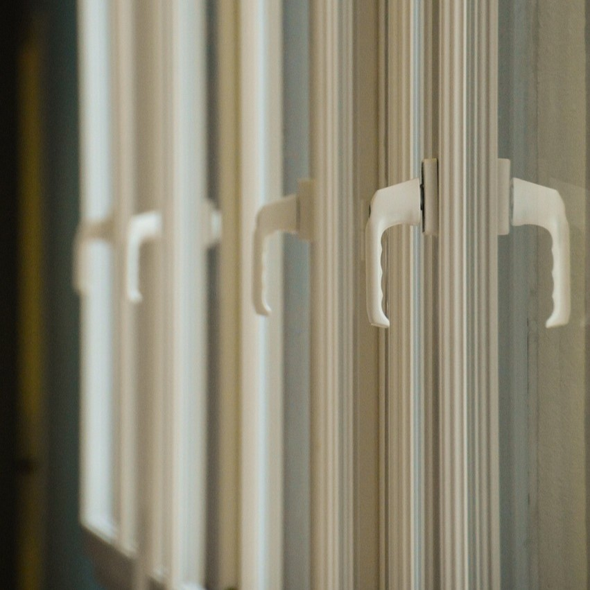
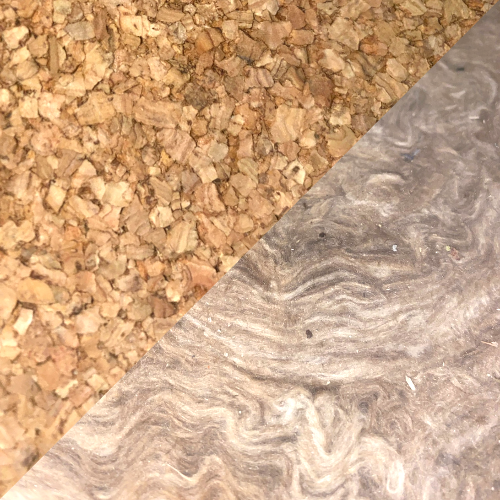
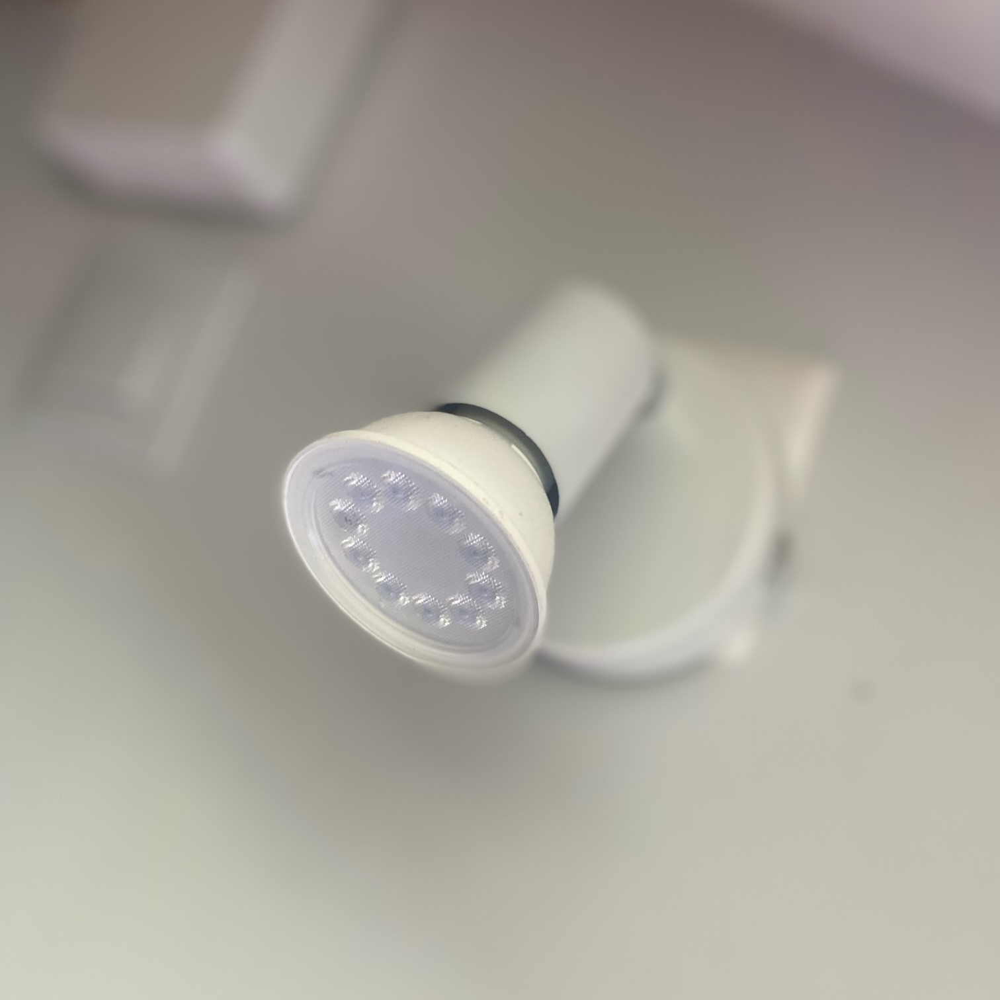
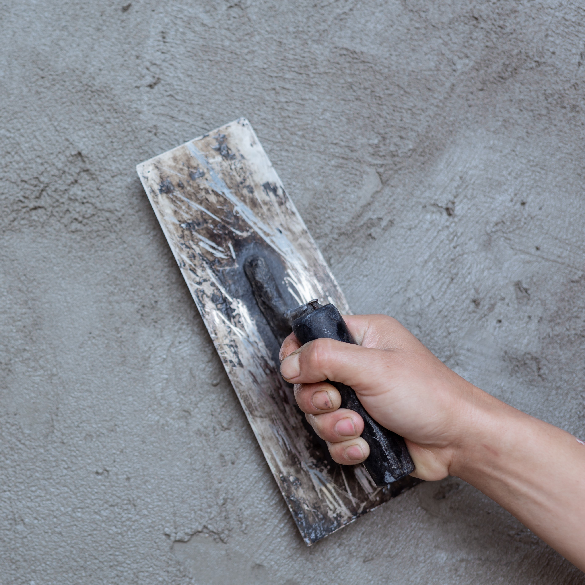
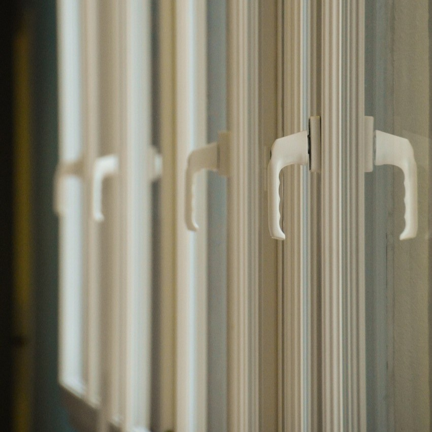
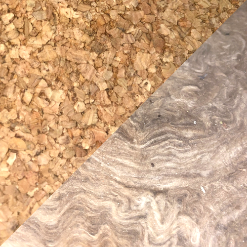
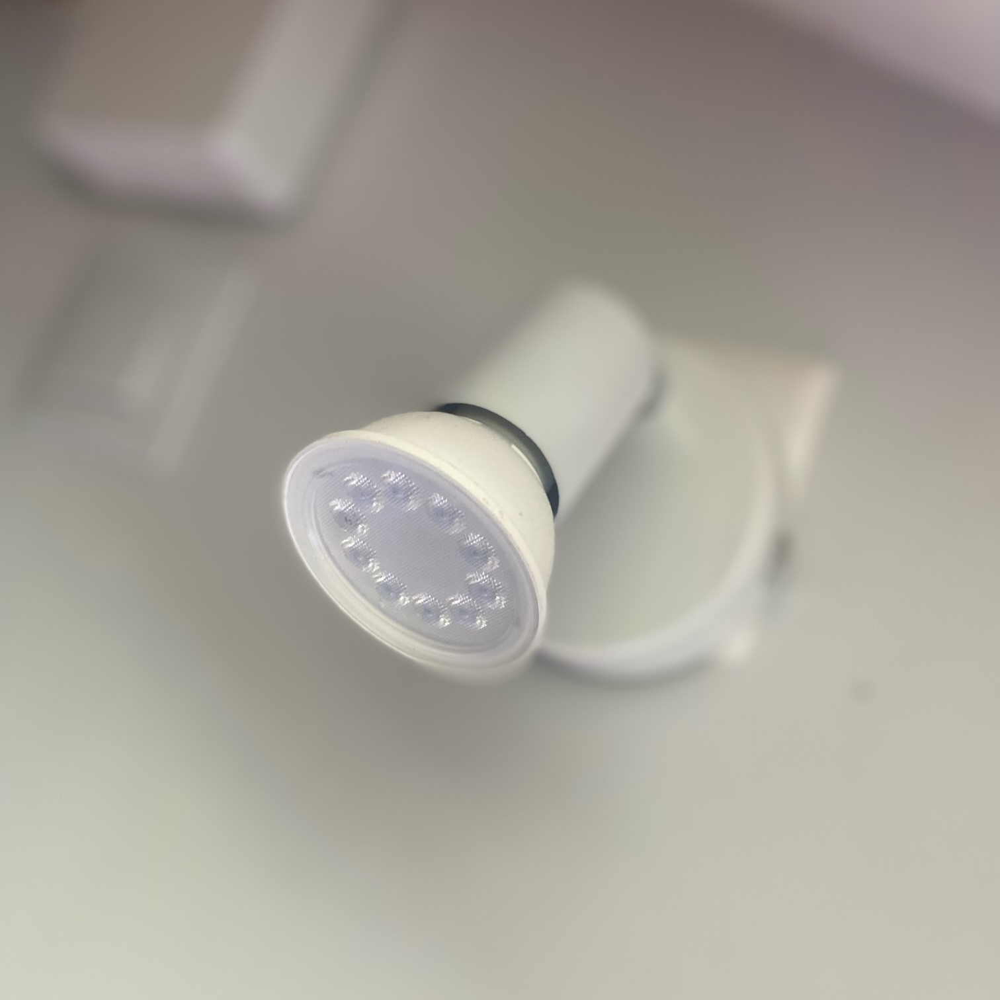

Fondée en 2000, la société Sarl PPK s'occupe de tous vos travaux de plâtrerie, peinture,
isolation intérieure, et électricité. Depuis plus de vingt ans, nous mettons notre expertise
au service de nos clients, tout en nous adaptant aux évolutions de la mode, des styles et des techniques.
Grâce à cette expérience, nous avons acquis une solide réputation en fournissant
des prestations de qualité, toujours à l'écoute des besoins spécifiques de chaque projet.
Qu'il s'agisse de rénovation ou d'aménagement intérieur, notre équipe qualifiée garantit des
résultats à la hauteur de vos attentes, tout en respectant les délais et budgets.
Chez Sarl PPK, nous restons fidèles à notre engagement pour l'excellence, fiers
de la confiance de nos clients et prêts à relever de nouveaux défis pour continuer
à vous offrir des solutions sur mesure.
Située dans le sud-est lyonnais, la société Sarl PPK réalise vos projets de rénovation, d'aménagement, de décoration et d'installation de plateformes. Qu'il s'agisse de petites réparations ou de la rénovation complète de votre domicile, nous avons toujours eu à cœur de satisfaire nos clients. Au fil des années, notre entreprise s'est forgée une solide réputation grâce à notre engagement, notre expertise, et la qualité de nos services, qui nous permettent de répondre à toutes vos attentes, quel que soit l’ampleur du projet.
 






